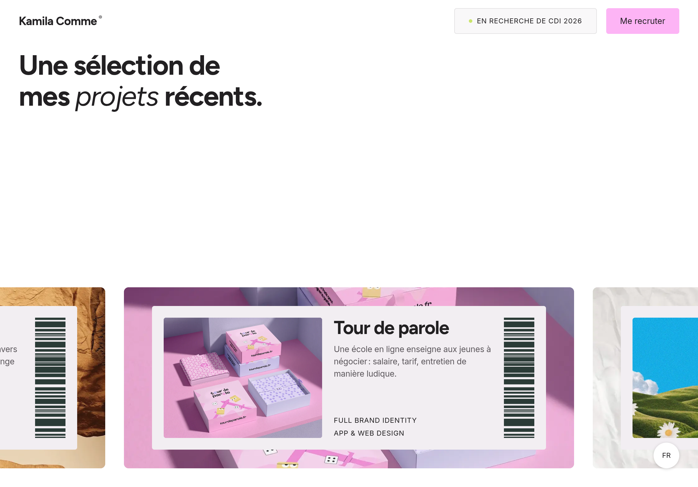
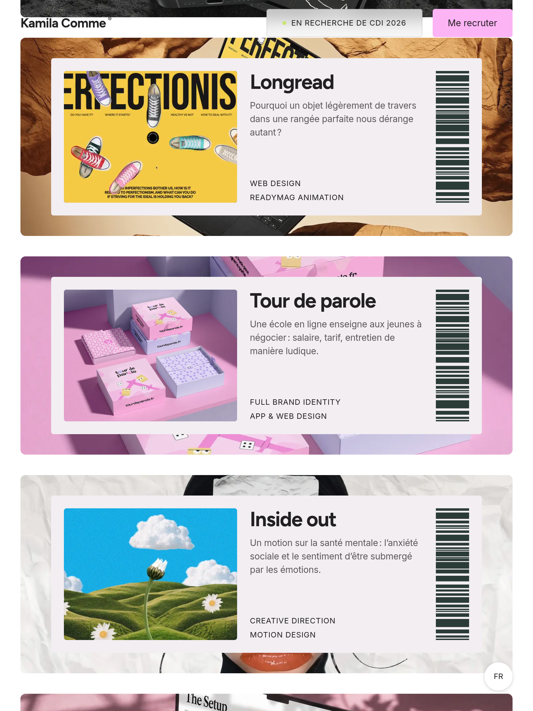
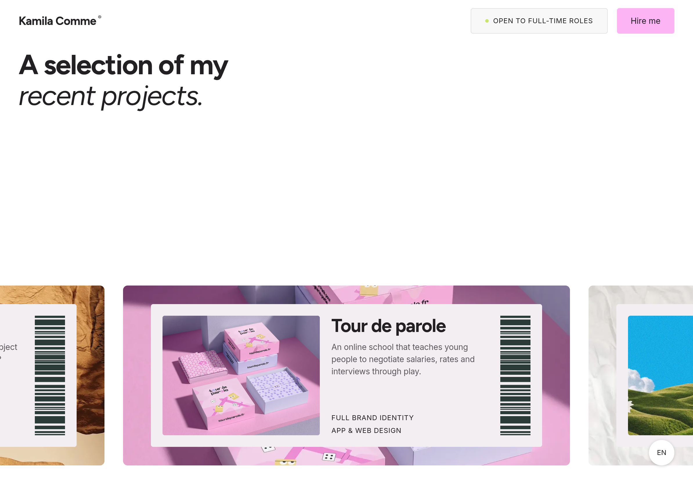
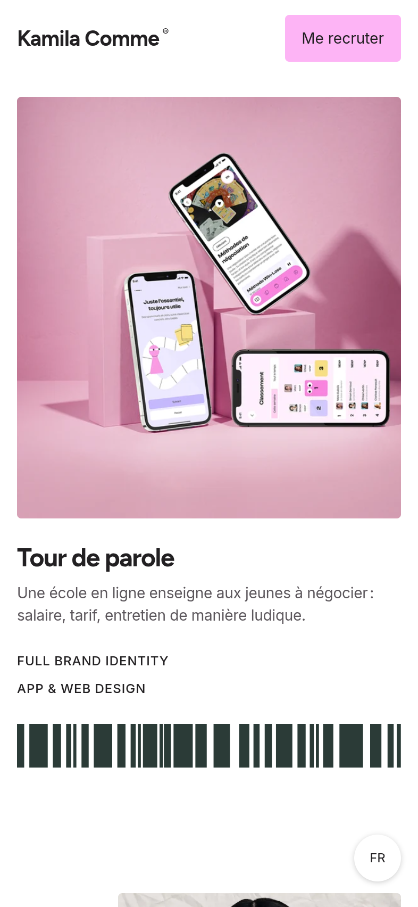
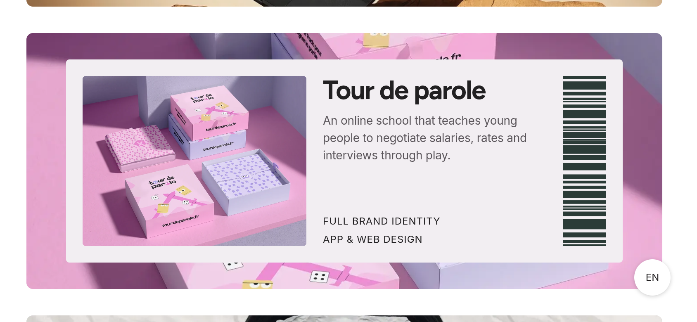
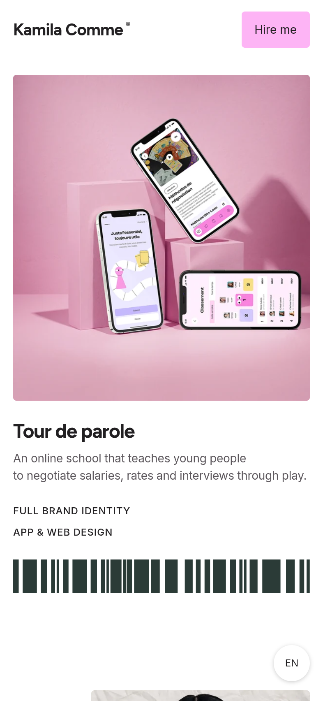

After-fix browser captures. Use the paired files under measurements/ for project identity, actual profile, scroll position, and About preservation data. Read the test summary and baseline observations.





